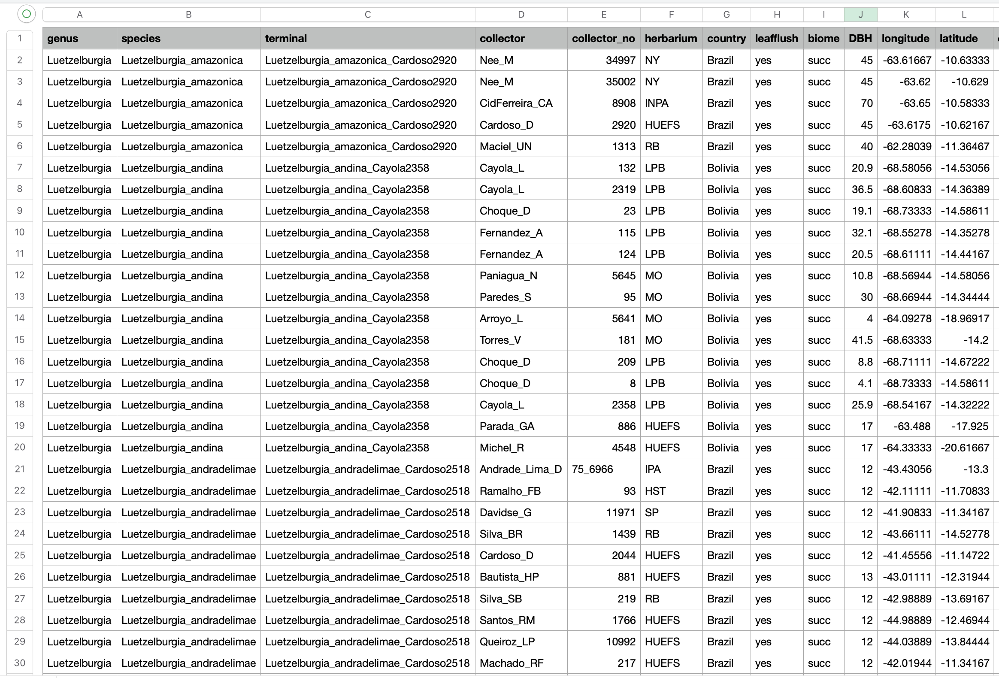

Creating input data for independent contrast regression analysis
Source:vignettes/articles/independent_contrast_regression_inputs.Rmd
independent_contrast_regression_inputs.Rmd
The main goal of the InNOutBT package is to readily create input data and process output data for Meade & Pagel’s (2022) BayesTraits program.
We describe how the InNOutBT’s function BayesTraits.inputs creates two input text files representing samples of trait/climate data. One text file reports mean values for each sample of traits and a second text file reports linked samples of trait values in a format used in the phylogenetic independent contrast regression analyses. This function includes an argument to calculate the net node count for each species/accession given a phylogenetic tree, which is used to explore the effects of speciation rates on the response variable (e.g. O’Donovan et al. 2018).
Setup
InNOutBT is not on CRAN yet but you can install the latest development version from GitHub:
#install.packages("devtools")
devtools::install_github("DBOSlab/InNOutBT")Example of spreadsheet with georeferenced data and associated traits
Outputting longitude and latitude data (columns arranged in that order) with the terminal label column provides the required data formats of the mean and linked data that can be analyzed using the Geographical Model in BayesTraits. Before using BayesTraits.inputs, make sure your spreadsheet with georeferenced data and associated traits also includes a terminal column where each accession/sample is linked to the corresponding tip label in the input phylogenetic tree.

Create sample of trait data using a subset of explanatory variables
The example below generates the linked and mean data files where “DBH” is defined as the response variable because it is listed first and “bio12” and “bio15” are the explanatory variables because they are listed second and third. Thus, the first name reported in the argument traitcols will define the response variable.
library(InNOutBT)
library(treeio)
traitdata <- read.csv("Data/vataireoids_1610_25May2022_BayesTraits.csv")
phylo <- read.beast("Data/vatcomb30_24May22_Yule.con.tree")
BayesTraits.inputs(tree = phylo,
data = traitdata,
tipscol = "terminal",
traitcols = c("DBH", "bio12", "bio15"),
dir_create = "results_BayesTraits_input",
fileDistData = "BayesTraits_linked_data_bio12_bio15.txt",
fileMeanData = "BayesTraits_mean_data_bio12_bio15.txt")Log transform any variable before creating the input mean and linked data
You may want to log-10 transform a variable before running the phylogenetic regression analysis. In the argument logtransf, just report the variables/traits to be log-transformed. The log-transformed trait will always result in a new column with a new name where the additional prefix “log10” is added, as in the following: “log10NAMEOFTHETRAIT”. The name(s) of the log-transformed trait(s) to be used in the analyses should then be listed in the argument addtraits. Note that in the example below, the variable “DBH” was chosen to be log-transformed and also as the response variable. In this case, we need to reorder the variables in the argument ordtraits so as to make sure your newly generated “log10DBH” variable will be reported first and thus serve as the response variable. You may also want to save a copy of the original spreadsheet that includes the new column of log-transformed DBH by reporting a name for the data file copy in the argument fileOrigData.
BayesTraits.inputs(tree = phylo,
data = traitdata,
tipscol = "terminal",
logtransf = "DBH",
traitcols = c("bio12", "bio15"),
addtraits = "log10DBH",
ordtraits = c("log10DBH", "bio12", "bio15"),
dir_create = "results_BayesTraits_input",
fileDistData = "BayesTraits_linked_data_bio12_bio15.txt",
fileMeanData = "BayesTraits_mean_data_bio12_bio15.txt",
fileOrigData = "vataireoids_1610_25May2022_BayesTraits_DBH_logtransf.csv")Create sample of trait data using a different subset of explanatory variables
By setting the argument NodeCount = TRUE, the function will calculate the net node count for each species/accession given the phylogenetic tree of reference. Net nodes or node count was used to explore the effects of speciation rates (e.g. O’Donovan et al. 2018) on the response variable. In the example below we chose to log10-transform both the response variable “DBH” and the newly created column of net nodes, all which were then listed in the arguments addtraits and ordtraits.
BayesTraits.inputs(tree = phylo,
data = traitdata,
tipscol = "terminal",
NodeCount = TRUE,
logtransf = c("DBH", "NodeCount"),
traitcols = c("bio12", "bio15"),
addtraits = c("log10NodeCount", "log10DBH"),
ordtraits = c("log10DBH", "bio12", "bio15", "log10NodeCount"),
dir_create = "results_BayesTraits_input",
fileDistData = "BayesTraits_linked_data_bio12_bio15_nnodes.txt",
fileMeanData = "BayesTraits_mean_data_bio12_bio15_nnodes.txt",
fileOrigData = "vataireoids_1610_25May2022_BayesTraits_netnodes_logtransf.csv")Create sample of trait data using quadratic net nodes as the explanatory variable
You may want to square transform a variable before running the phylogenetic regressions. You just need to provide in the argument sqrtransf the variables/traits to be squared. The square-transformed trait will always result in a new column with a new name where the additional prefix “sqr” is added as following: “sqrNAMEOFTHETRAIT”. The name(s) of the square-transformed trait(s) to be used in the analyses should then be listed in the argument addtraits. Note that in the example below the newly created variable “NodeCount” was chosen to be both log10-transformed and log10-transformed squared.
BayesTraits.inputs(tree = phylo,
data = traitdata,
tips_colname = "terminal",
NodeCount = TRUE,
logtransf = c("DBH", "NodeCount"),
sqrtransf = c("NodeCount"),
addtraits = c("sqrNodeCount", "log10DBH"),
ordtraits = c("log10DBH", "log10NodeCount", "sqrNodeCount"),
dir_create = "results_BayesTraits_input",
fileDistData = "BayesTraits_linked_data_nnodes_nnodes2.txt",
fileMeanData = "BayesTraits_mean_data_nnodes_nnodes2.txt",
fileOrigData = "vataireoids_1610_25May2022_BayesTraits_netnodes_logtransf_sqrtransf.csv")Create sample of trait data for GEO model
The example below uses columns of “longitude” and “latitude” in the original spreadsheet to generate input mean and linked data for use in the Geographical Model of BayesTraits.
BayesTraits.inputs(tree = phylo,
data = traitdata,
tips_colname = "terminal",
NodeCount = FALSE,
traitcols = c("longitude", "latitude"),
dir_create = "results_BayesTraits_input",
fileDistData = "BayesTraits_linked_data_GEO.txt",
fileMeanData = "BayesTraits_mean_data_GEO.txt")
Once the above text files of mean and linked samples of trait data have been created, analyzing them can be facilitated by creating a shell script) with BayesTraits.shell for multiple phylogenetic regression analyses. These BayesTraits runs are then followed by processing the Log and Stones files, which is detailed in using BayesTraits.outputs to process the resulting output files).